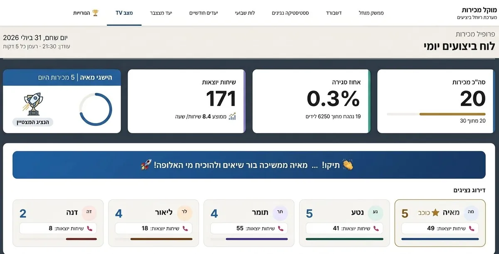

הרבה בעלי עסקים מגלים איך היה החודש רק כשהוא כבר נגמר. הבעיה: ברגע שרואים בדוח סוף חודש שמשהו לא עבד, כבר מאוחר מדי לתקן אותו — הזמן הזה כבר חלף.
המחיר של "לגלות מאוחר"
יעד שלא הושג, נציג שנתקע, מוצר שפתאום מפסיק להימכר — כל אלה ניתנים לתיקון בקלות אם מזהים אותם באמצע הדרך. כשהם מתגלים רק בסיכום החודשי, האפשרות היחידה שנשארת היא לתעד את הכישלון, לא למנוע אותו.
מה דשבורד בזמן אמת בעצם משנה
במקום לחכות לדוח, המספרים מתעדכנים לאורך היום: כמה נסגר, איפה מתעכבים, איזה נציג צריך עזרה. זה הופך את הניהול מריאקטיבי (מגיבים למה שכבר קרה) לפרואקטיבי (מתערבים תוך כדי תנועה).

לא רק להנהלה — גם לצוות
כשדשבורד יעדים גלוי גם לנציגים עצמם, זה משנה התנהגות בזמן אמת. לראות "עוד 2 עסקאות ליעד היומי" משפיע אחרת לגמרי מאשר לגלות בסוף החודש שהיעד לא הושג.
דוח טוב אומר לך מה קרה. דשבורד טוב אומר לך מה קורה עכשיו — וזה בדיוק ההבדל בין לתעד לבין לפעול.
מה כדאי שיהיה בדשבורד כזה
- מעקב יעדים מול ביצוע בפועל, מתעדכן לאורך היום
- פילוח לפי נציג, מוצר, אזור או תקופה
- התראה אוטומטית כשמשהו חורג מהצפוי
- ייצוא מהיר לדוח כשצריך לשתף עם ההנהלה
מזהים בעיה לפני שהיא הופכת לדפוס
הערך האמיתי של דשבורד חי לא בזה שהוא "מראה נתונים" — הוא בזה שהוא מראה אותם מוקדם מספיק כדי לפעול. נציג שמתחיל שבוע חלש רואה את זה כבר ביום השני, לא בסיכום החודשי, ומנהל יכול להציע עזרה נקודתית לפני שהפער הופך למגמה. מוצר שהמכירות שלו נחתכות בחצי בהשוואה לשבוע שעבר מתגלה כשעוד אפשר לבדוק אם זה מחיר, מלאי, או משהו אחר — לא כשכל התקופה כבר הסתכמה.
איך זה שונה מדשבורד מוקד שירות
דשבורד מכירות עוקב אחרי יעדים, ביצוע ופילוח לפי נציג ומוצר — לא אחרי תוכן השיחות עצמן. למי שמנהל גם מוקד שירות או מכירות טלפוני ורוצה לדעת איך כל שיחה בודדת עברה, לא רק מה התוצאה הסופית שלה, יש כלים נפרדים לניתוח שיחות עם AI שמתאימים יותר לצורך הזה.
דוח סוף חודש מול דשבורד חי
| מה קורה בפועל | דוח סוף חודש | דשבורד בזמן אמת |
|---|---|---|
| זיהוי נציג שמתקשה | רק בסיכום החודשי | באמצע השבוע |
| זיהוי מוצר שמפסיק להימכר | אחרי שההפסד כבר נצבר | תוך ימים |
| השפעה על הנציג עצמו | אין, התקופה כבר נגמרה | משנה התנהגות בזמן אמת |
| שיתוף עם ההנהלה | דוח מרוכז בלבד | דשבורד חי + ייצוא בלחיצה |
למי זה הכי מתאים
הדשבורד לא צריך להיות מסובך כדי להיות שימושי — הוא רק צריך להראות את הדברים הנכונים, ברגע הנכון, לאדם הנכון. זה מתאים לכל עסק עם צוות מכירות שרוצה לנהל לפי מה שקורה עכשיו, לא רק לפי מה שקרה בחודש שעבר. זה בדיוק העיקרון שמנחה אותנו ב-A.L Systems כשאנחנו בונים דשבורדים כאלה.
שאלות נפוצות
מה דשבורד מכירות בזמן אמת מראה שדוח סוף חודש לא מראה?
מעקב יעדים מול ביצוע בפועל שמתעדכן לאורך היום, פילוח לפי נציג, מוצר, אזור או תקופה, והתראה אוטומטית כשמשהו חורג מהצפוי — לא רק סיכום שמגיע אחרי שהחודש נגמר.
למה חשוב שהדשבורד יהיה גלוי גם לנציגים, לא רק להנהלה?
כשנציג רואה "עוד 2 עסקאות ליעד היומי" זה משפיע על ההתנהגות באותו רגע, לא רק בסיכום שמגיע בסוף החודש כשכבר אי אפשר לשנות כלום.
אפשר לייצא דוח להנהלה כשצריך, או רק לצפות בדשבורד?
שני הדברים. הדשבורד מתעדכן בזמן אמת לשימוש יומיומי, ומאפשר גם ייצוא מהיר לדוח כשצריך לשתף תמונת מצב עם ההנהלה או עם שותף.
הדשבורד מבדיל בין נציג שמתקשה לבין מוצר שמפסיק להימכר?
כן. פילוח לפי נציג, מוצר, אזור או תקופה מראה בדיוק איפה הבעיה נמצאת, כך שאפשר להתערב בנקודה הנכונה — ולא רק לדעת שהמספר הכללי נמוך מהצפוי.